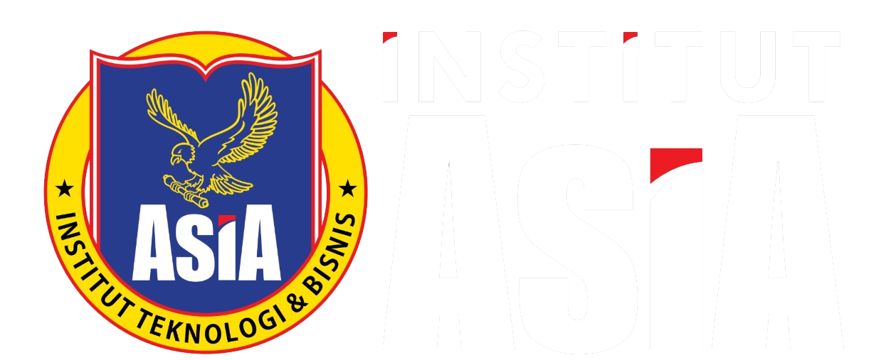

SCAN QR PAKAI HP MU
Mode Aktif: 10 Pertanyaan Singkat
Database: Sinkronisasi...
HASIL PESERTA (LIVE FEED)
Klik nama peserta untuk membuka Spotlight & Foto!
Menunggu audiens menyelesaikan scan di HP...

INSTITUT ASIAInteractive Student Mapping Scanner
Mode Aktif: 10 Pertanyaan Singkat
Klik nama peserta untuk membuka Spotlight & Foto!
Menunggu audiens menyelesaikan scan di HP...